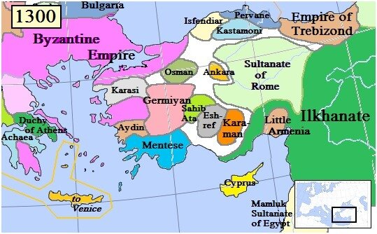

После закрепления на Родосе госпитальеры стали осторожно осматриваться вокруг, оценивая сложившуюся военно-политическую обстановку. Надо сказать, что оценили они ее не совсем верно. Своим главным вероятным противником они посчитали приморские бейлики (государственные образования, княжества, возглавляемые беями) анатолийских турок, которые образовались после распада Конийского (Румского, или Сельджукского) султаната, в частности бейлик Айдын.

По инициативе папы Климента VI Византия, Венеция и родосские рыцари 6 сентября 1332 г. подписали договор о совместной борьбе (редкий случай!) с турками. В сентябре 1344 г., как мы уже писали, флот родосских рыцарей участвовал во взятии объединенным флотом союзников сильной крепости Смирны (портовый город бейлика Айдын), принадлежавшей турецкому эмиру Умур-паше. В 1334 г. к договору присоединились Кипр, Франция и Папская область, но дальше дело не пошло – в декабре 1344 г. альянс распался. Однако сейчас пока нас интересует не единство христиан. Речь идет о начале наступления на айдынцев, которые выбраны в качестве главного противника.
В это время папа Иннокентий VI предпринял безуспешную попытку перенести резиденцию Ордена иоаннитов с Родоса в Смирну, откуда они смогли бы наносить отвлекающие удары в Малой Азии.
Через три года (в мае 1347 г.) объединенный флот союзников, при решающем участии военно-морского контингента родосских рыцарей, в морском сражении у острова Имброс разгромил айдынский и саруханский флот, состоявший из 100 кораблей. 20 апреля 1348 айдынский эмир Умур попытался отвоевать Смирну, но во время очередного штурма Нижнего города Умур погиб. Сохранившиеся свидетельства тех дней гласят, что эмир был убит стрелой из арбалета в тот момент, когда в пылу сраженья приподнял забрало. После смерти Умура айдынцы стали нести от родосских рыцарей одно поражение за другим.
Казалось бы, ближайшая цель иоаннитов достигнута – на территории главного противника захвачен плацдарм, теперь необходимо закрепиться на нем и расширять завоеванные территории. Но, как показывают дальнейшие события, направление главного удара было выбрано неправильно.
Также действием иоаннитов в неверном стратегическом направлении можно считать и их участие в кампании по взятию Александрии. В 1362 году король Кипра Петр I отправился в Европу, чтобы набрать людей для нового крестового похода. В 1365 году он отплыл со своей армией из Венеции и, соединившись с силами госпитальеров на Родосе, напал на египетский город Александрию. Гарнизон Александрии был застигнут врасплох, и город захватили и разграбили. Однако при известии о приближении армии мамлюков крестоносное войско покинуло Александрию.
В 1370 году Кипр заключил мир с мамлюками. Итальянские города-республики, пострадавшие вследствие нападения на Египет, были возмущены кипрскими действиями. В 1372 году началась война Кипра с Генуей. В 1373 году генуэзцы захватили Фамагусту, и их разрушительное наступление было остановлено только отчаянным сопротивлением крепости Кирении. Что же касается кипрской династии Лузиньянов, то им оставалось либо пытаться отвоевать Фамагусту, либо платить дань Генуе. Воевать с генуэзцами они уже не могли; оказавшись в изоляции и бедности, они больше не принимали участие в антитурецких действиях в Эгейском море и не предпринимали никаких мер для усиления своей позиции. Вместо этого они допустили, чтобы корсары (большинство из них – каталонцы) использовали Кипр в качестве своей базы. Мамлюкскнй султан отреагировал на это тем, что в середине 1420-х годов совершил несколько нападений на Кипр. (В последующем события развивались так. В 1426 году кипрские войска были разгромлены в Кирокитии, а король Янус (1398–1432) был взят в плен. Теперь Кипр платил дань Египту. В 1517 году Египет был захвачен османами, и Кипр превратился в подвластную Османской империи территорию.)
Описанные события, прямо или косвенно, отвлекали силы и внимание родосских рыцарей. А в это время у них под боком разрасталась новая военно-политическая сила, ставшая вскоре главным противником госпитальеров – Османская держава турок. Для того, чтобы иметь представление об обстановке, в которой пришлось действовать родосским рыцарям, коротко рассмотрим историю возникновения этой державы.
Под мощным давлением татаро-монгол образовалась вторая (после сельджуков) волна переселения тюркских народностей Центральной Азии в Малую Азию. В 1243 г. татаро-монголы разгромили в Малой Азии войска сельджукидов. В этот период в Западной и Центральной Анатолии сложилось почти 20 мелких княжеств, лишь формально признававших вассальную зависимость от монгольских правителей, оставшихся далеко на востоке, в сердце Центральной Азии. (Подробно можно посмотреть в статье: Шеремет В.И. Становление Османской империи; «Новая и новейшая история», №1, 2001). Эти княжества, или бейлики (от слова "бей" - правитель) были населены отступившими под натиском войск Чингисхана и его преемников кочевыми тюрками и осевшими еще раньше в Анатолии кочевыми и полукочевыми тюркскими племенами.
Из всех этих новых княжеств выделялся наиболее компактный и крепкий бейлик на северо-западе Малой Азии, в котором правил первый независимый бей по имени Осман (1288-1324). Имя бея дало название и его стране - государство стало называться Османская держава, а позднее – империя. Оно просуществовало как монархия (султанат) до 1922 г., т.е. непрерывно и при одной и той же османской династии, что вряд ли встречается еще в мировой истории, почти 700 лет.
Сам Осман и его ближайшие преемники Орхан (1314-1362), Мурад I (1362-1389) и Баязид I (1389-1402) были людьми лично очень храбрыми и умелыми в бою , они взяли за пример жизнь пророка Мухаммеда и его праведных сподвижников - халифов, которые при жизни только одного поколения создали Великий Арабский халифат
Во-вторых, и это было не менее важно, их владение, т.е. их бейлик, оказался вдали от беспощадных татаро-монгольских наместников-баскаков. Соседство Византии, которая вначале благосклонно взирала на новых воинственных соседей-турок, как бы отгородивших Византию и от арабов, и от ордынцев, первые османские султаны, использовали с выгодой для себя.
«Они хотели и умели учиться. Всему - и военному делу у опытной великой державы "ромеев" Византии, в первую очередь. Кроме того, турки перенимали опыт тысячелетнего управления государством, искусства византийской тонкой, построенной на разведке и личных преемственных связях дипломатии, а также налаженной веками организации земледельческих работ в Анатолии, житнице древнего мира, которая вскормила хеттов и допотопные цивилизации. Если где-то утвердилась сильная власть и раскинулись тучные поля, то туда и направят свои кибитки все новые и новые переселенцы из тюрских племен. Они вливались в османский бейлик, создавали по соседству с османидами свои поселения, которые впоследствии, когда добровольно, а когда хитростью или оружием, присоединялись к бейлику. Нетерпимость к соперникам, фанатическая устремленность к подчинению всего инакого, неосманского, были заложены в генотипе молодой государственной системы.» (В.И.Шеремет)
Летом 1302 г. Осман разбил войска византийского наместника в районе Бурсы (тогда она носила название Брусса) на северо-западе Малой Азии. Это было первое крупное военное сражение, выигранное турками-османами. Наконец-то византийцы поняли, что имеют дело с опасным противником. (Но родосские рыцари этого еще не осознавали!) К 1315 г. Бурса была практически окружена крепостями, и в 1326, после 10-летней осады, завоёвана турками-османами во главе с сыном Османа Орханом. Бурса стала первой столицей Османского государства, и Орхан стал первым османским султаном. Но еще долго после этого столицей османов становилось любое место, где раскидывался шатер бея.
При осаде и взятии Бурсы получила развитие новая тактика взятия городов, которая позже была использована и против госпитальеров. Армия Орхана состояла в основном из кавалерийских частей. Не было у турок и осадных машин. Поэтому город, окруженный кольцом мощных укреплений, штурмом. взять было невозможно. Устанавливалась долговременная блокада вражеского города, прерывавшая все его связи с внешним миром. Из захваченных окрестностей города изгонялось или обращалось в рабство местное население. Затем эти земли обживались людьми, переселенными туда по приказу бея. Город оказывался во враждебном кольце, и над его жителями нависала угроза голодной смерти, после чего турки легко им овладевали. (Петросян Ю.А. Османская империя: могущество и гибель. Исторические очерки; М.: Эксмо, 2003)
В это же время тюрки (далеко не все из них служили османам) переправились через Дарданеллы. Землетрясение в Галлиполи в 1354 или 1355 году дало возможность османам занять этот порт и сделать его своей первой базой к западу от Дарданелл. И хотя впоследствии крестоносцы Амедея Савойского отбили у них Галлиполи, османы вернули себе позиции в Европе, захватив в 1369 году Адрианополь, а в правление Мурада I – Фракию и Македонию.
На очереди был Родос. Расскажем о дальнейших событиях в следующий раз.